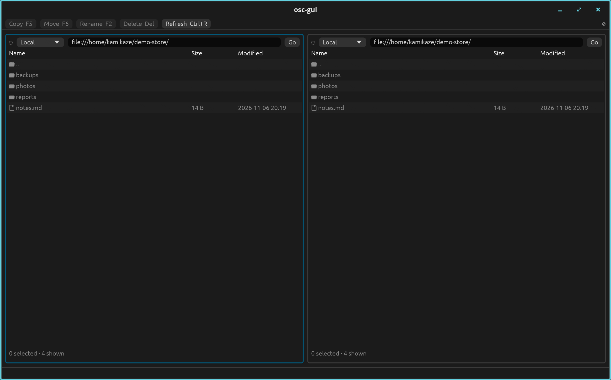

Copy, move, stream and sign objects across AWS S3, Google Cloud Storage, Azure Blob Storage and local disks. Turn on encryption and the provider stores only ciphertext.

One client reads and writes every backend. The same calls work whichever store sits behind the URL, so a migration is a loop, not a rewrite.
| URL | Backend | Notes |
|---|---|---|
| s3://bucket/key | AWS S3 and S3-compatible stores | AWS profiles and SSO, plus Garage or SeaweedFS endpoints |
| gs:// or gcs:// | Google Cloud Storage | Application default credentials and service accounts |
| az://, wasb(s)://, abfs(s):// | Azure Blob Storage | Container and key in the path |
| http:// and https:// | HTTP and HTTPS | Any web endpoint, addressed by URL |
| file:///path, /path, ~/path | Local filesystem | The same API for a working copy on disk |
Pick the surface that fits your work. Each one reaches the same stores with the same encryption.
# copy between providers, encrypted osc --keyring keyring cp s3://src/report.csv az://dst/report.csv
from object_storage_client import ObjectStorageClient client = ObjectStorageClient() await client.copy_object("s3://a/x.bin", "gs://b/x.bin")
Keys stay with you, and the provider stores only ciphertext. Rotation adds the new key first, then moves objects over.
No. Encryption needs a keyring. Create one with osc keyring new, or point the client at a keyring file or command. Without one, objects are stored as sent.
The CLI and Python wheels cover Linux on x86_64 and aarch64, macOS on Apple silicon, and Windows on x86_64. The GUI runs on macOS (Apple silicon) and on Linux with a Wayland session; X11 is not supported.
Yes. Any S3-compatible endpoint works through the s3:// scheme, including Garage and SeaweedFS.
No. A link signed with temporary credentials stops working when that session ends, whatever expiry was requested.
Not with an Apple Developer ID. On first launch, open System Settings, go to Privacy & Security, and choose Open Anyway.
export CARGO_REGISTRIES_BIXORITY_INDEX="sparse+https://codeberg.org/api/packages/bixority/cargo/"
cargo install object-storage-client --registry bixority --features guipip install object-storage-clientThe GUI needs a Wayland session on Linux. The macOS disk image is not signed with an Apple Developer ID.